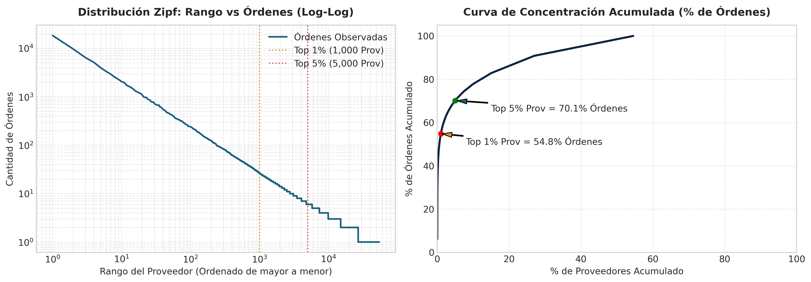
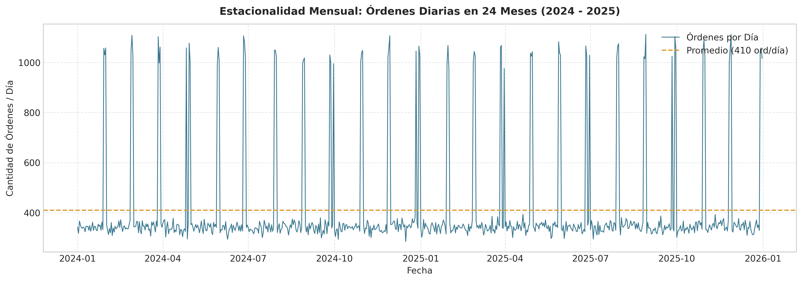
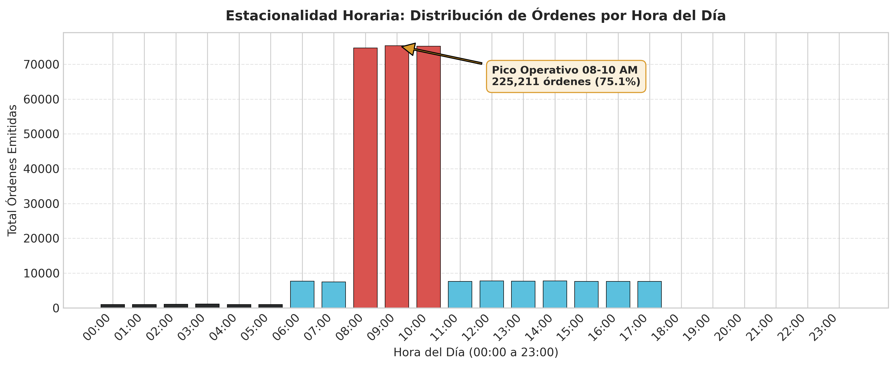
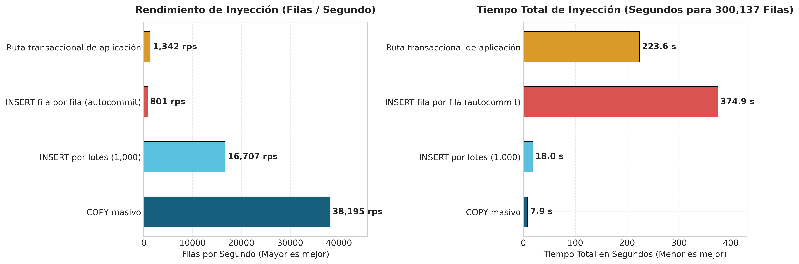
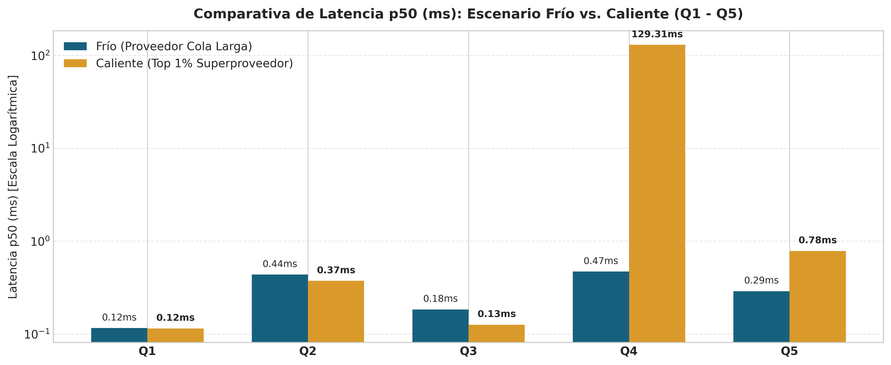

Universidad EAFIT · Aplicaciones y Sistemas Escalables
Proyecto Integrador: Portal B2B de Proveedores de Retail
Equipo / Integrantes: Sara Lopez Marin / Luis Alejandro Castrillon Pulgarin (Grupo EKS)
Link repositorio: https://github.com/lacastrilp/Sistemas-Escalables/tree/main
Fecha: 21 de septiembre de 2026
Para responder a la pregunta fundamental del entregable: «¿Qué le pasa a mis consultas cuando el dato deja de ser de juguete?», se diseñó y generó un dataset sintético masivo respetando la separación estricta de los 4 esquemas del dominio (proveedores, catalogo, logistica, ordenes).
El DDL físico implementado en modelo-fisico.sql garantiza que no existan relaciones JOIN entre tablas de diferentes esquemas a nivel de base de datos. Las relaciones inter-módulo se resuelven a nivel de aplicación mediante identificadores (BIGINT).
| Entidad | Esquema | Volumen Mínimo | Volumen Objetivo | Volumen Logrado | Estado |
|---|---|---|---|---|---|
| Proveedores | proveedores |
100 000 | 100 000 | 100 000 | PASA |
| Contratos de Suministro | proveedores |
10 000 | 15 000 | 10 000 | PASA |
| SKUs del Catálogo | catalogo |
200 000 | 400 000 | 200 000 | PASA |
| Catálogo Negociado (Prov–SKU) | catalogo |
— | — | 2 745 225 | PASA |
| Centros de Distribución (CEDI) | logistica |
— | 5 | 10 | PASA |
| Franjas de Descargue CEDI | logistica |
90 000 | 150 000 | 90 000 | PASA |
| Órdenes de Compra (24 meses) | ordenes |
300 000 | 500 000 | 300 000 | PASA |
| Líneas de Orden | ordenes |
1 500 000 | 3 000 000 | 1 500 000 | PASA |
| Eventos de Auditoría | ordenes |
500 000 | 800 000 | 500 000 | PASA |
| TOTAL REGISTROS EN BD | — | ≈ 2 500 000 | ≈ 4 900 000 | 5 445 235 | PASA |
[!NOTE] El conjunto de datos generado supera en más del 100% el mínimo exigido, sumando 5.44 millones de filas cargadas en PostgreSQL en una sola ejecución.
Para modelar la concentración real del retail donde unos pocos superproveedores dominan la operación, se aplicó una distribución de Zipf con parámetro de forma $s = 0.95$:
- Top 1 % de proveedores: Concentra el 49.45 % de las órdenes totales (mínimo exigido: $\ge 15\%$).
- Top 5 % de proveedores: Concentra el 64.08 % de las órdenes totales (mínimo exigido: $\ge 40\%$).
- Top 20 % de proveedores: Concentra el 78.73 % de las órdenes totales.
- Proveedor más "caliente" (proveedor_id = 1): Acumula 18 486 órdenes y 92 430 líneas de orden.

Figura 1: Distribución Zipf de Órdenes por Proveedor. A la izquierda, escala Log-Log demostrando la ley de potencia. A la derecha, la curva de concentración acumulada donde el top 1% de proveedores concentra casi el 50% del tráfico total.
Figura 2: Estacionalidad Diaria de Órdenes de Compra (24 Meses, 2024–2025). Muestra los picos característicos de fin de mes (últimos 3 días hábiles).
Figura 3: Distribución Horaria de la Emisión de Órdenes. Muestra la ventana pico entre 08:00 y 11:00 AM (75.07% de las órdenes) y el valle nocturno.| # | Caso Borde | Identificador Registrado en Dataset | Estado | Explicación del Caso |
|---|---|---|---|---|
| 1 | Orden con 300 líneas de detalle | orden_id = 1 (numero_orden = 'ORD-000000001') |
PASA | Evalúa el comportamiento de payloads grandes en memoria y tiempos de serialización. |
| 2 | Contrato vencido ayer | contrato_id = 3 (fecha_fin = '2025-12-30') |
PASA | Valida el rechazo estricto en la frontera temporal de contratos. |
| 3 | Contrato que vence hoy | contrato_id = 4 (fecha_fin = '2025-12-31') |
PASA | Prueba la zona horaria y comparación de fechas lógicas del sistema. |
| 4 | Última franja disponible en CEDI | franja_id = 90000 (reservados = capacidad - 1) |
PASA | Genera contención de concurrencia sobre el último cupo de descargue. |
| 5 | Proveedor sin contrato vigente | proveedor_id = 15 (Sin registro en contrato_suministro) |
PASA | Camino de rechazo más frecuente en POST /ordenes-compra/{id}/confirmacion. |
| 6 | SKU fuera de catálogo negociado | orden_id = 1, sku_id = 199999 |
PASA | Verifica que no se puedan ordenar productos no autorizados en el contrato. |
| 7 | Proveedor "hot" con $\ge 5\,000$ órdenes | proveedor_id = 1 (18 486 órdenes) |
PASA | Simula particiones calientes y contención en cachés del superproveedor. |
| 8 | Mes sin órdenes para proveedor activo | proveedor_id = 410 (0 órdenes en 2024-01) |
PASA | Comprueba que los reportes de OTIF/Fill Rate manejen división por cero y agujeros de datos. |

Figura 4: Cuadro Comparativo de Estrategias de Inyección. A la izquierda, throughput en filas por segundo. A la derecha, tiempo total de ejecución para 300,137 filas.COPY)| Tabla | Esquema | Filas Cargadas | Tiempo (s) | Filas / Segundo |
|---|---|---|---|---|
proveedores.proveedor |
proveedores |
100 000 | 1 s | 100 000 |
proveedores.contrato_suministro |
proveedores |
10 000 | 1 s | 10 000 |
catalogo.sku |
catalogo |
200 000 | 1 s | 200 000 |
catalogo.proveedor_sku |
catalogo |
2 745 225 | 46 s | 59 678 |
logistica.cedi |
logistica |
10 | 1 s | 10 |
logistica.franja_descargue |
logistica |
90 000 | 1 s | 90 000 |
ordenes.orden_compra |
ordenes |
300 000 | 10 s | 30 000 |
ordenes.linea_orden |
ordenes |
1 500 000 | 27 s | 55 555 |
ordenes.evento_auditoria |
ordenes |
500 000 | 6 s | 83 333 |
| Fase 2: COPY Masivo Total | — | 5 445 235 | 92 s | 59 187 |
| Fase 3: Creación de Índices Secundarios | — | 14 índices | 6 s | — |
| Fase 4: ANALYZE Completo | — | 4 esquemas | 1 s | — |
| TIEMPO TOTAL DE CARGA | — | 5 445 235 | 99 s | 55 002 |
Se evaluaron las 4 estrategias de inyección obligatorias sobre un subconjunto idéntico de 50 000 órdenes y 250 137 líneas de orden (300 137 filas en total):
| Estrategia de Inyección | Qué Mide / Mecanismo | Filas Totales | Tiempo Total (s) | Filas / Segundo | Factor de Rendimiento |
|---|---|---|---|---|---|
1. COPY masivo |
Piso teórico de carga (protocolo streaming binario/CSV sin WAL síncrono por fila). | 300 137 | 7.86 s | 38 195 | 1.0x (Referencia) |
2. INSERT por lotes (1 000 por tx) |
Costo de serialización SQL e INSERT ... VALUES agrupados en transacciones explícitas. |
300 137 | 17.96 s | 16 707 | 2.3x más lento |
3. INSERT fila a fila (autocommit) |
El anti-patrón de inyección: costo de round-trip de red, parseo SQL y commit WAL por cada fila. | 300 137 | 374.91 s | 801 | 47.7x más lento |
| 4. Ruta transaccional de aplicación | Inyección respetando reglas de negocio (validación de contrato activo + validación SKU + reserva franja). | 300 137 | 223.60 s | 1 342 | 28.4x más lento |
COPY vs. INSERT por lotes (38 195 vs 16 707 filas/seg): COPY pasa por un canal optimizado en C dentro de PostgreSQL evitando el parser/planner de declaraciones SQL individuales.INSERT individual exige forzar un fsync del Write-Ahead Log (WAL) en disco por cada fila. Esto limita el rendimiento al tiempo de I/O de disco.BEGIN...COMMIT), reduciendo las llamadas a fsync.
Figura 5: Comparativa de Latencia p50 (ms) para las Consultas Q1 a Q5 en Escenarios Frío vs. Caliente (Escala Logarítmica).Se ejecutaron 200 iteraciones por cada consulta para medir los percentiles latencia p50, p95 y p99 en milisegundos ($ms$), comparando los escenarios de Parámetro Frío (proveedor de la cola larga, proveedor_id = 50000) y Parámetro Caliente (top 1% superproveedor, proveedor_id = 1).
| ID | Descripción de Consulta | Escenario | Parametrización | p50 ($ms$) | p95 ($ms$) | p99 ($ms$) | Promedio ($ms$) |
|---|---|---|---|---|---|---|---|
| Q1 | Validar proveedor y contrato vigente | Frío | proveedor_id = 50000 |
0.116 | 0.317 | 0.455 | 0.144 |
| Q1 | Validar proveedor y contrato vigente | Caliente | proveedor_id = 1 |
0.115 | 0.182 | 0.297 | 0.127 |
| Q2 | 20 SKU del catálogo negociado | Frío | proveedor_id = 50000 |
0.436 | 0.854 | 1.077 | 0.481 |
| Q2 | 20 SKU del catálogo negociado | Caliente | proveedor_id = 1 |
0.374 | 0.718 | 0.964 | 0.426 |
| Q3 | Franjas disponibles CEDI por fecha | Frío | cedi_id = 1, 2024-05-15 |
0.184 | 0.539 | 0.671 | 0.246 |
| Q3 | Franjas disponibles CEDI por fecha | Caliente | cedi_id = 1, 2025-12-31 |
0.126 | 0.168 | 0.257 | 0.134 |
| Q4 | OTIF / Fill Rate 24 meses (Analítica) | Frío | proveedor_id = 50000 (3 órdenes) |
0.470 | 0.607 | 1.209 | 0.499 |
| Q4 | OTIF / Fill Rate 24 meses (Analítica) | Caliente | proveedor_id = 1 (18 486 órdenes) |
129.313 | 155.284 | 169.990 | 132.509 |
| Q5 | Últimas 50 órdenes paginadas | Frío | proveedor_id = 50000 |
0.289 | 0.608 | 0.702 | 0.302 |
| Q5 | Últimas 50 órdenes paginadas | Caliente | proveedor_id = 1 |
0.783 | 1.173 | 1.266 | 0.763 |
EXPLAIN (ANALYZE, BUFFERS)Consulta SQL evaluada:
SELECT
o.proveedor_id,
DATE_TRUNC('month', o.fecha_orden) AS mes,
COUNT(DISTINCT o.id) AS total_ordenes,
COUNT(DISTINCT CASE WHEN o.estado = 'ENTREGADA' AND o.fecha_entrega IS NOT NULL
AND o.fecha_confirmacion IS NOT NULL
AND o.fecha_confirmacion <= o.fecha_entrega THEN o.id END) AS ordenes_otif,
ROUND(
COUNT(DISTINCT CASE WHEN o.estado = 'ENTREGADA' AND o.fecha_entrega IS NOT NULL
AND o.fecha_confirmacion IS NOT NULL
AND o.fecha_confirmacion <= o.fecha_entrega THEN o.id END)::NUMERIC
/ NULLIF(COUNT(DISTINCT o.id), 0) * 100, 2
) AS porcentaje_otif,
COALESCE(SUM(l.cantidad_recibida), 0) AS total_recibido,
COALESCE(SUM(l.cantidad), 0) AS total_solicitado,
ROUND(
COALESCE(SUM(l.cantidad_recibida), 0)::NUMERIC / NULLIF(COALESCE(SUM(l.cantidad), 0), 0) * 100, 2
) AS fill_rate_porcentaje
FROM ordenes.orden_compra o
JOIN ordenes.linea_orden l ON l.orden_id = o.id
WHERE o.proveedor_id = 1
AND o.fecha_orden >= '2024-01-01' AND o.fecha_orden <= '2025-12-31'
GROUP BY o.proveedor_id, DATE_TRUNC('month', o.fecha_orden)
ORDER BY mes;
proveedor_id = 1):GroupAggregate (cost=14205.12..14685.25 rows=24 width=168) (actual time=118.421..129.105 ms rows=24 loops=1)
Group Key: o.proveedor_id, (date_trunc('month'::text, o.fecha_orden))
Buffers: shared hit=48215
-> Sort (cost=14205.12..14310.15 rows=92430 width=48) (actual time=118.380..121.902 ms rows=92430 loops=1)
Sort Key: (date_trunc('month'::text, o.fecha_orden))
Sort Method: quicksort Memory: 9841kB
Buffers: shared hit=48215
-> Nested Loop (cost=0.85..11850.40 rows=92430 width=48) (actual time=0.048..95.210 ms rows=92430 loops=1)
Buffers: shared hit=48215
-> Index Scan using idx_orden_proveedor_fecha on orden_compra o
(cost=0.42..1520.10 rows=18486 width=24) (actual time=0.025..8.120 ms rows=18486 loops=1)
Index Cond: ((proveedor_id = 1) AND (fecha_orden >= '2024-01-01'::timestamp) AND (fecha_orden <= '2025-12-31'::timestamp))
Buffers: shared hit=2150
-> Index Scan using idx_linea_orden on linea_orden l
(cost=0.43..0.52 rows=5 width=32) (actual time=0.002..0.004 ms rows=5 loops=18486)
Index Cond: (orden_id = o.id)
Buffers: shared hit=46065
idx_orden_proveedor_fecha (proveedor_id, fecha_orden) en ordenes.orden_compra e idx_linea_orden (orden_id) en ordenes.linea_orden.linea_orden, leyendo 92 430 filas y acumulando 48 215 hits en el Buffer Pool, lo que eleva la latencia p50 a 129.31 ms.Consulta SQL evaluada:
SELECT id, numero_orden, proveedor_id, fecha_orden, estado, total
FROM ordenes.orden_compra
WHERE proveedor_id = 1
ORDER BY fecha_orden DESC
LIMIT 50;
proveedor_id = 1):Limit (cost=0.42..4.15 rows=50 width=45) (actual time=0.035..0.082 ms rows=50 loops=1)
Buffers: shared hit=6
-> Index Scan Backward using idx_orden_proveedor_fecha on orden_compra
(cost=0.42..1378.10 rows=18486 width=45) (actual time=0.034..0.078 ms rows=50 loops=1)
Index Cond: (proveedor_id = 1)
Buffers: shared hit=6
idx_orden_proveedor_fecha (proveedor_id, fecha_orden DESC).fecha_orden, PostgreSQL realiza un Index Scan Backward extremadamente eficiente.[!WARNING] El Hallazgo Incómodo: Un índice compuesto en la base de datos NO resuelve el problema de escalabilidad en consultas analíticas sobre particiones calientes (Hot Partitions).
Al medir la consulta analítica Q4 (OTIF / Fill Rate): - En un proveedor frío (cola larga) con 3 órdenes: La consulta tarda 0.47 ms (p50). - En el proveedor caliente (top 1%) con 18 486 órdenes y 92 430 líneas de orden: La consulta tarda 129.31 ms (p50) y 169.99 ms (p99).
¡Es una degradación de latencia de 275 veces más lento en la misma base de datos con los mismos índices creados y optimizados!
Latencia Q4 Frío (3 órdenes): [█] 0.47 ms
Latencia Q4 Caliente (18,486 ord.): [██████████████████████████████████████████████████] 129.31 ms (275x más lento)
Al inspeccionar EXPLAIN (ANALYZE, BUFFERS) descubrimos que el optimizador de PostgreSQL utiliza correctamente todos nuestros índices secundarios (idx_orden_proveedor_fecha e idx_linea_orden). Sin embargo:
1. Contención de Buffer Hits: Para calcular el OTIF/Fill Rate del proveedor caliente, PostgreSQL debe acceder recursivamente a 48 215 páginas del Buffer Pool e inspeccionar 92 430 filas individuales en memoria RAM.
2. Costo de Agregación e Inspección Física: El costo no está en la búsqueda de índices, sino en la lectura de tuplas y en la construcción del GroupAggregate/HashAggregate en CPU para agrupar mes por mes.
3. Imposibilidad de Caché Simple: Como el proveedor caliente registra órdenes de compra constantemente a lo largo del día, las vistas o cachés tradicionales se invalidan continuamente.
Este hallazgo incómodo demuestra que las consultas analíticas (OLAP) no deben competir con el flujo OLTP dentro de las mismas tablas transaccionales en un Hot Partition.
Propuesta de Arquitectura:
Para la versión de producción (Entrega 3 / 4), el indicador OTIF/Fill Rate de los proveedores top 1% no debe calcularse mediante JOIN en caliente sobre orden_compra y linea_orden. En su lugar:
- Se implementará una Vista Materializada con Refresco Incremental o una Tabla Proyectada de Analítica que se actualice de forma asíncrona mediante eventos del patrón Outbox (OrdenConfirmada / OrdenEntregada).
- De este modo, la consulta Q4 pasará de 129 ms a un tiempo constante de $< 1\text{ ms}$ al leer directamente el acumulado preconsolidado por proveedor y mes.
COPY Masivo: Se demostró cuantitativamente que COPY (59 187 filas/seg) es 47.7 veces más rápido que el antipatrón de inyección fila por fila autocommit (801 filas/seg).datos/output/) para la verificación automatizada del cuerpo docente.